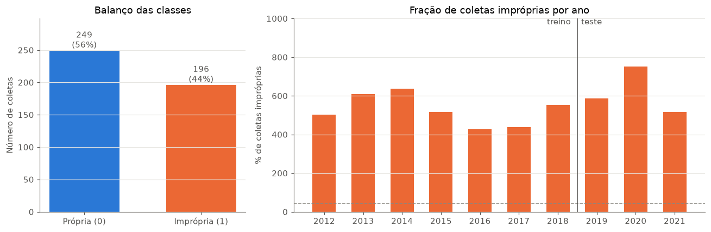
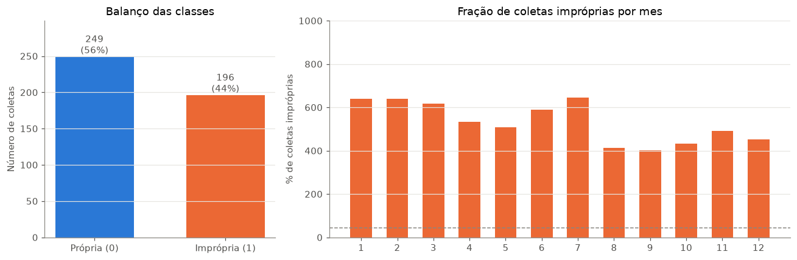
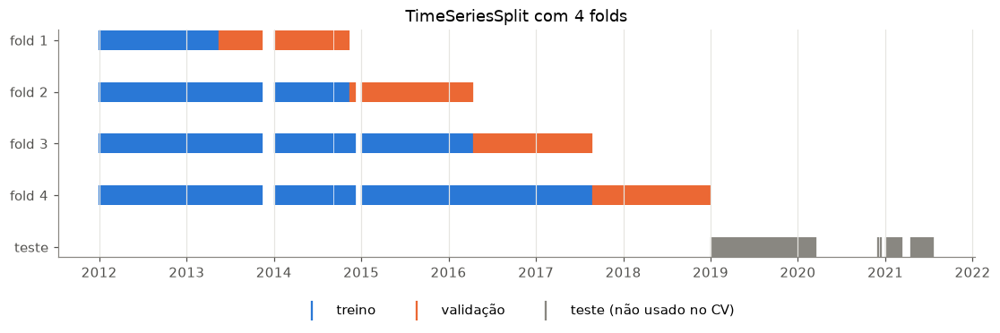
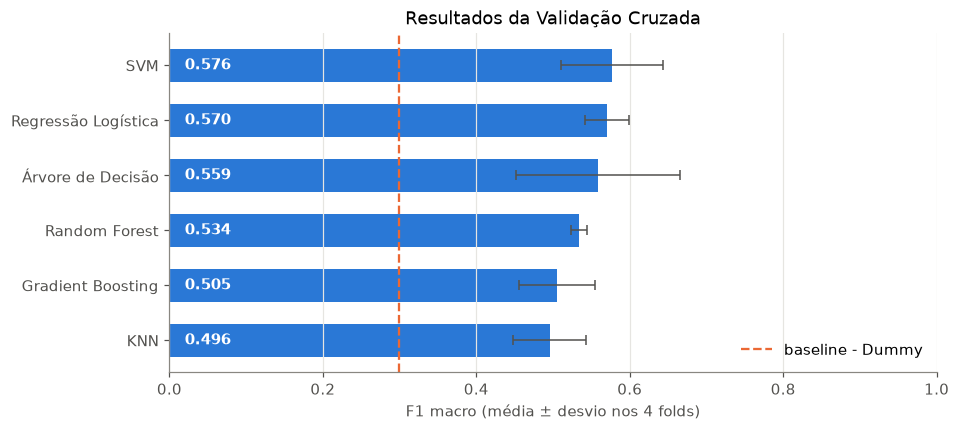
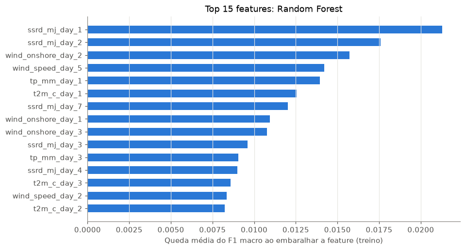
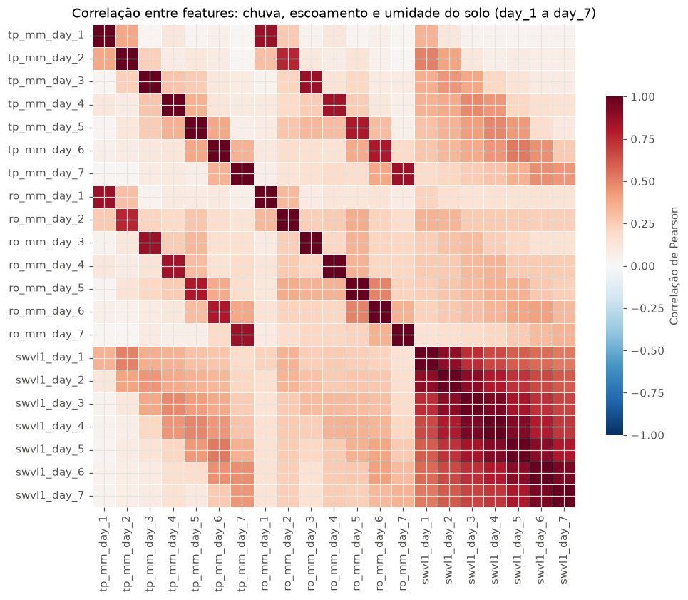
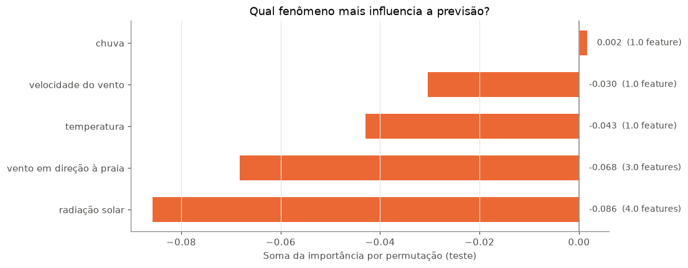

Predição de Balneabilidade com variáveis climáticas
Inspiração: Predizer a qualidade da água para uma praia específica do estado de São Paulo.
Consultando alguns datasets presentes na Kaggle, o dataset de balneabilidade estava bastante completo com várias anos de dados. Além do mais, esse dataset instiga a trabalhar com séries temporais, que são muito mais difícieis de predizer do que dataset sem séries temporais. Aqui vamos diretamente trabalhar em cenários mais difíceis.
O dataset contém um série de praias os dados de qualidade de água para um parâmetro: Enterococcus. Esse é um parâmetro bastante importante em qualidade da água pois é um biondicador de despejo de esgotamento sanitário.
Contudo, esse dataset não possui nenhuma variável preditora, para isso, fizemos uma preparação do dataset no notebook dataset_preparation.ipynb e baixamos os dados de ERA5, diretamente do Earth Data Hub. Captamos 7 variáveis para utilizar como variáveis preditoras, são elas: - Total precipitation (tp) - Precipitao Total. - Runoff (ro) - Escoamento Superficial - Top Soil Moisture (swl1) - Umidade superficial do solo - Temperature 2m - (t2m) - Temperatura a 2 metros - Downward Solar Radiation (ssrd) - Radiação Solar - U10 e v10, são as duas componentes ortogonais do vento, que é transformada em velocidade do vento.
Contudo, a ideia é para cada variável, buscarmos os 7 dias antecedentes a coleta. Dessa forma, temos 6 variáveis climáticas com 7 dias anteriores, totalizando 42 variáveis preditoras para nosso pipeline de Machine-Leaning.
Antes de partirmos, vamos pensar em conjunto, será que utilizando APENAS variáveis climáticas, seria passível de predizer se uma praia específica será imprópria para banho no dia seguinte?
Poderíamos fazer isso facilmente para todas as praias de SP, mas para evitar um volume muito grande de dados aqui, vamos focar na praia do Perequê em Guarujá, SP.
Nesta aula vamos percorrer o fluxo padrão de um projeto de machine learning supervisionado:
Definir o alvo (a classe que queremos prever) e checar se as classes estão balanceadas
Separar treino e teste respeitando o tempo
Montar pipelines (pré-processamento + modelo) com o sklearn
Otimizar hiperparâmetros com Grid Search e validação cruzada (4 folds)
Retreinar o melhor modelo em todo o treino
Avaliar no teste: matriz de confusão, precisão, recall e F1
Selecionar features e ver como menos variáveis afetam o desempenho
Interpretar o melhor modelo: quais variáveis influenciam a previsão, e em que direção
Os dados vêm do notebook dataset_preparation.ipynb: 445 coletas de Enterococcus da CETESB (2012–2021) e, para cada coleta, 7 variáveis do ERA5-Land em cada um dos 7 dias anteriores.
Um dataset é desbalanceado quando uma classe aparece muito mais que a outra. Isso importa porque um modelo que sempre chuta a classe majoritária já acerta muito, e parece bom sem ter aprendido nada.
Code
contagem = dataset["impropria"].value_counts().sort_index()por_ano = dataset.groupby(dataset["Date"].dt.year)["Enterococcus"].mean()fig, axes = plt.subplots(1, 2, figsize=(12, 4), width_ratios=[1, 2])axes[0].bar(NOMES_CLASSES, contagem.values, color=[AZUL, LARANJA], width=0.6)for x, n inenumerate(contagem.values): axes[0].text(x, n +5, f"{n}\n({n / contagem.sum():.0%})", ha="center", color=TINTA)axes[0].set(ylabel="Número de coletas", title="Balanço das classes", ylim=(0, contagem.max() *1.2))axes[0].grid(axis="x", visible=False)axes[1].bar(por_ano.index, por_ano.values, color=LARANJA, width=0.6)axes[1].axhline(dataset["impropria"].mean() *100, color=CINZA, ls="--", lw=1)axes[1].axvline(2018.5, color=TINTA, lw=1)axes[1].text(2018.4, 970, "treino ", ha="right", color=TINTA)axes[1].text(2018.6, 970, "teste", ha="left", color=TINTA)axes[1].set(ylabel="% de coletas impróprias", title="Fração de coletas impróprias por ano", ylim=(0, 1000), xticks=por_ano.index)axes[1].grid(axis="x", visible=False)plt.tight_layout()plt.show()

Code
# efeito da sazonilidade contagem = dataset["impropria"].value_counts().sort_index()por_mes = dataset.groupby(dataset["Date"].dt.month)["Enterococcus"].mean()fig, axes = plt.subplots(1, 2, figsize=(12, 4), width_ratios=[1, 2])axes[0].bar(NOMES_CLASSES, contagem.values, color=[AZUL, LARANJA], width=0.6)for x, n inenumerate(contagem.values): axes[0].text(x, n +5, f"{n}\n({n / contagem.sum():.0%})", ha="center", color=TINTA)axes[0].set(ylabel="Número de coletas", title="Balanço das classes", ylim=(0, contagem.max() *1.2))axes[0].grid(axis="x", visible=False)axes[1].bar(por_mes.index, por_mes.values, color=LARANJA, width=0.6)axes[1].axhline(dataset["impropria"].mean() *100, color=CINZA, ls="--", lw=1)axes[1].set(ylabel="% de coletas impróprias", title="Fração de coletas impróprias por mes", ylim=(0, 1000), xticks=por_mes.index)axes[1].grid(axis="x", visible=False)plt.tight_layout()plt.show()

Variáveis preditoras (features)
Usamos as 7 variáveis do ERA5-Land em cada um dos 7 dias anteriores (day_7 … day_1) e os acumulados de chuva. Na análise exploratória vimos que existe uma certa sazonalidade, por isso adicionamos o mês codificado de forma cíclica:
Assim dezembro (12) fica “perto” de janeiro (1), o que não aconteceria usando o número do mês direto.
Code
mes = dataset["Date"].dt.monthdataset["mes_sin"] = np.sin(2* np.pi * mes /12)dataset["mes_cos"] = np.cos(2* np.pi * mes /12)NAO_FEATURES = ["City", "Beach", "Date", "Enterococcus", "impropria"]FEATURES = [c for c in dataset.columns if c notin NAO_FEATURES]print(f"{len(FEATURES)} features")FEATURES[:10]
Em séries temporais não podemos embaralhar os dados antes de separar. Se misturarmos, o modelo treina com coletas de 2020 e é testado em 2015: ele “vê o futuro”, e a nota no teste fica otimista demais (data leakage). Na vida real, treinamos com o passado e prevemos o futuro.
Treino (e validação): 2012–2018 - equivalente a 80% das coletas
Teste: 2019–2021 - equivalente 20% das coletas, guardados a sete chaves até o final
from sklearn.model_selection import train_test_splitX_train_s = dataset.drop(columns=['Enterococcus','impropria']).sort_values(by=['Date'])Y_target = dataset['impropria']X_train_s, X_test_s, y_train_s, y_test_s = train_test_split(X_train_s, Y_target, shuffle=False, test_size=0.2)## qual é o problema aqui? #X_train_s['Date'].max()
Validação cruzada temporal (4 folds)
Como vimos na aula teórica, para escolher hiperparâmetros precisamos de dados de validação, sem tocar no teste.
A validação cruzada divide o treino em k partes (folds) e avalia o modelo k vezes.
No KFold comum os folds são embaralhados e o modelo pode treinar no futuro e validar no passado. Com dados temporais usamos o TimeSeriesSplit, conseguimos conservar que em cada fold o modelo treina com tudo que veio antes e valida no bloco seguinte. O treino vai crescendo a cada fold.
Code
# cria a classe de Time series splitcv = TimeSeriesSplit(n_splits=4)# a classe funciona atraves do metodo splitfig, ax = plt.subplots(figsize=(12, 3))for i, (idx_tr, idx_val) inenumerate(cv.split(X_train)): ax.scatter(datas_train.iloc[idx_tr], [i] *len(idx_tr), color=AZUL, marker="|", s=200, label="treino"if i ==0elseNone) ax.scatter(datas_train.iloc[idx_val], [i] *len(idx_val), color=LARANJA, marker="|", s=200, label="validação"if i ==0elseNone)ax.scatter(datas_test, [4] *len(datas_test), color=CINZA, marker="|", s=200, label="teste (não usado no CV)")ax.set(yticks=range(5), yticklabels=[f"fold {i +1}"for i inrange(4)] + ["teste"], title="TimeSeriesSplit com 4 folds")ax.invert_yaxis()ax.grid(axis="y", visible=False)ax.legend(frameon=False, loc="upper center", bbox_to_anchor=(0.5, -0.15), ncols=3)plt.show()

Pré-processamento e modelo em um objeto só
Vamos utilizar uma classe bastante pertinente para manter um código limpo e legível, essa classe é o Pipeline que serve para encadeiar as etapas de maneira lógica. Aqui cada pipeline tem duas:
StandardScaler: padronização, deixa cada feature com média 0 e desvio padrão 1: \(z = \frac{x - \mu}{\sigma}\)
o classificador
Por que isso importa tanto?
Evita vazamento: dentro da validação cruzada, o StandardScaler calcula \(\mu\) e \(\sigma\)só com os dados de treino de cada fold. Se padronizássemos o dataset inteiro antes, a validação espiaria a média do futuro (data leak).
Organização: trocar de algoritmo é trocar uma peça; o resto do código fica igual.
Escala: KNN, SVM e regressão logística dependem de distâncias ou de pesos, então variáveis em escalas diferentes (radiação em MJ/m², chuva em mm) distorceriam o modelo. Árvores não precisam, mas mantemos o mesmo formato para todos.
In a Jupyter environment, please rerun this cell to show the HTML representation or trust the notebook. On GitHub, the HTML representation is unable to render, please try loading this page with nbviewer.org.
Já vimos que a acurácia pode enganar. Dessa forma, vamos partir para o F1, e combinar com duas perguntas:
Precisão: das vezes que o modelo disse “imprópria”, quantas eram mesmo? \(\frac{TP}{TP + FP}\)
Recall (sensibilidade): das coletas realmente impróprias, quantas o modelo pegou? \(\frac{TP}{TP + FN}\)
F1: média harmônica das duas, \(F1 = 2 \cdot \frac{\text{precisão} \cdot \text{recall}}{\text{precisão} + \text{recall}}\)
O F1 é calculado para uma classe. Temos duas opções:
scoring
O que mede
"f1"
F1 APENAS da classe positiva (imprópria)
"f1_macro"
média simples do F1 da classe imprópria e do F1 da classe própria
Baseline: o modelo Dummy
Antes de qualquer algoritmo, medimos um DummyClassifier que sempre responde “imprópria”. Qualquer modelo de verdade precisa superar esse valor para valer a pena.
C (inverso da regularização), l1_ratio (0 = L2/Ridge, 1 = L1/Lasso)
KNN
vota com os k vizinhos mais parecidos
n_neighbors, peso dos vizinhos
SVM (RBF)
fronteira não linear com margem máxima
C, gamma
Árvore de Decisão
sequência de perguntas “sim/não” sobre as features
profundidade, mínimo de amostras por folha
Random Forest
média de muitas árvores treinadas em amostras diferentes
profundidade, folhas, nº de features por divisão
Gradient Boosting
árvores em sequência, cada uma corrigindo o erro da anterior
nº de árvores, taxa de aprendizado, profundidade
class_weight="balanced" dá mais peso à classe minoritária (própria) no treino, uma forma simples de lidar com o desbalanceamento. Deixamos o Grid Search decidir se usa ou não.
Nos pipelines, o nome da etapa + __ + nome do parâmetro indica a qual peça o hiperparâmetro pertence: modelo__C é o C da etapa "modelo".
Para cada algoritmo, o GridSearchCV testa todas as combinações da grade. Cada combinação é treinada e validada nos 4 folds temporais, e a melhor é a de maior F1 macro médio na validação.
Regressão Logística F1 macro validação = 0.570 {'modelo__C': 0.01, 'modelo__class_weight': None, 'modelo__l1_ratio': 0}
KNN F1 macro validação = 0.496 {'modelo__n_neighbors': 5, 'modelo__weights': 'uniform'}
SVM F1 macro validação = 0.576 {'modelo__C': 10, 'modelo__class_weight': 'balanced', 'modelo__gamma': 0.01}
Árvore de Decisão F1 macro validação = 0.559 {'modelo__class_weight': 'balanced', 'modelo__max_depth': 2, 'modelo__min_samples_leaf': 1}
Random Forest F1 macro validação = 0.534 {'modelo__class_weight': 'balanced', 'modelo__max_depth': 5, 'modelo__max_features': 'sqrt', 'modelo__min_samples_leaf': 1}
Gradient Boosting F1 macro validação = 0.505 {'modelo__learning_rate': 0.1, 'modelo__max_depth': 3, 'modelo__n_estimators': 100}
Code
# resultados da validação cruzada, média e desvio nos 4 folds, para a melhor combinação de cada modelores_cv = pd.DataFrame({ nome: {"F1 macro (validação)": b.best_score_,"desvio": b.cv_results_["std_test_score"][b.best_index_]}for nome, b in buscas.items()}).T.sort_values("F1 macro (validação)")fig, ax = plt.subplots(figsize=(9, 4))ax.barh(res_cv.index, res_cv["F1 macro (validação)"], xerr=res_cv["desvio"], color=AZUL, height=0.6, error_kw={"ecolor": TINTA, "lw": 1, "capsize": 3})ax.axvline(f1_baseline_cv.mean(), color=LARANJA, ls="--", lw=1.5, label="baseline - Dummy")ax.legend(frameon=False, loc="lower right")for y, v inenumerate(res_cv["F1 macro (validação)"]): ax.text(0.02, y, f"{v:.3f}", va="center", color="white", fontweight="bold")ax.set(xlabel="F1 macro (média ± desvio nos 4 folds)", xlim=(0, 1), title="Resultados da Validação Cruzada")ax.grid(axis="y", visible=False)plt.show()# o modelo escolhido é o melhor na VALIDAÇÃO, nunca no testemelhor = res_cv["F1 macro (validação)"].idxmax()print(f"Modelo escolhido pela validação cruzada: {melhor}")

Modelo escolhido pela validação cruzada: SVM
Retreinar com todo o treino
Durante o CV, cada modelo só viu parte do treino. Agora que conhecemos os melhores hiperparâmetros, retreinamos cada pipeline em todo o período 2012–2018. clone cria uma cópia “zerada” do pipeline, e set_params aplica os hiperparâmetros vencedores.
Obs.: o GridSearchCV faz isso sozinho com refit=True (o padrão). Aqui deixamos explícito para ficar claro o que acontece.
Code
finais = {"Baseline": clone(baseline).fit(X_train, y_train)}for nome, (pipe, _) in modelos.items(): finais[nome] = clone(pipe).set_params(**buscas[nome].best_params_).fit(X_train, y_train)list(finais)
A importância por permutação embaralha uma feature de cada vez e mede quanto o F1 macro cai. Se o F1 cai muito, o modelo depende daquela variável.
Calculamos a importância nos dados de treino. Na próxima seção vamos usar esse ranking para escolher features, e qualquer escolha feita olhando o teste contaminaria a avaliação final (data leakage).
Code
melhor ="Random Forest"
Code
imp = permutation_importance(finais[melhor], X_train, y_train, scoring=METRICA, n_repeats=50, random_state=15, n_jobs=-1 )importancia = pd.Series(imp.importances_mean, index=FEATURES).sort_values(ascending=False)top = importancia.head(15).sort_values()fig, ax = plt.subplots(figsize=(9, 5))ax.barh(top.index, top.values, color=AZUL, height=0.6)ax.axvline(0, color=CINZA, lw=1)ax.set(xlabel="Queda média do F1 macro ao embaralhar a feature (treino)", title=f"Top 15 features: {melhor}")ax.grid(axis="y", visible=False)plt.show()

Menos é mais? Retreinar só com as 15 features mais importantes
Até aqui usamos 53 features para apenas 356 coletas de treino. Diante dessa features, muitas delas acaba, representando a quase a mesma coisa:
a umidade do solo de hoje é muito parecida com a de ontem (variáveis autocorrelacionadas no tempo);
chuva, escoamento e umidade do solo do mesmo dia andam juntos (multicolinearidade).
Features redundantes não trazem informação nova, mas trazem ruído e mais parâmetros para ajustar. Com poucos dados, isso aumenta o risco de overfitting, e modelos baseados em distância (KNN, SVM) sofrem com a maldição da dimensionalidade em que quando utilizamos muitas dimensões, todos os pontos ficam “longe” uns dos outros.
Primeiro, vamos ver o quanto as features são correlacionadas entre si.
Code
# correlação entre as features de chuva, escoamento e umidade do solo nos 7 diasgrupo = [f"{v}_day_{d}"for v in ["tp_mm", "ro_mm", "swvl1"] for d inrange(1, 8)]corr_grupo = X_train[grupo].corr()fig, ax = plt.subplots(figsize=(10, 8))sns.heatmap(corr_grupo, cmap="RdBu_r", vmin=-1, vmax=1, square=True, linewidths=0.5, linecolor="white", cbar_kws={"label": "Correlação de Pearson", "shrink": 0.7}, ax=ax)ax.set_title("Correlação entre features: chuva, escoamento e umidade do solo (day_1 a day_7)")plt.show()# quantos pares de features (entre todas as 53) são fortemente correlacionados?corr_abs = X_train[FEATURES].corr().abs().to_numpy()pares = corr_abs[np.triu_indices_from(corr_abs, k=1)]print(f"{len(pares)} pares de features")print(f"{(pares >0.7).sum()} pares com |r| > 0.7 ({(pares >0.7).mean():.0%})")print(f"{(pares >0.9).sum()} pares com |r| > 0.9 ({(pares >0.9).mean():.0%})")

1378 pares de features
37 pares com |r| > 0.7 (3%)
4 pares com |r| > 0.9 (0%)
Leitura: a umidade do solo forma um bloco quase todo vermelho: o valor de um dia praticamente repete o do dia anterior. Chuva e escoamento do mesmo dia também andam juntos.
Agora selecionamos as 15 features mais importantes do ranking da seção 12 e repetimos exatamente o mesmo processo: mesmos pipelines, mesma grade de hiperparâmetros, mesma validação cruzada e mesmo teste. Só muda a lista de colunas.
# mesmo Grid Search + retreino, agora só com as 15 featuresbuscas_top, finais_top = {}, {}for nome, (pipe, grade) in modelos.items(): busca = GridSearchCV(pipe, grade, cv=cv, scoring=METRICA, refit=False, n_jobs=-1).fit(X_train_top, y_train) buscas_top[nome] = busca finais_top[nome] = clone(pipe).set_params(**busca.best_params_).fit(X_train_top, y_train)print(f"{nome:<20} F1 macro validação = {busca.best_score_:.3f}{busca.best_params_}")previsoes_top = {nome: m.predict(X_test_top) for nome, m in finais_top.items()}metricas_top = pd.DataFrame({nome: metricas_teste(y_test, y_pred) for nome, y_pred in previsoes_top.items()}).T
Regressão Logística F1 macro validação = 0.574 {'modelo__C': 0.01, 'modelo__class_weight': 'balanced', 'modelo__l1_ratio': 0}
KNN F1 macro validação = 0.523 {'modelo__n_neighbors': 11, 'modelo__weights': 'uniform'}
SVM F1 macro validação = 0.553 {'modelo__C': 1, 'modelo__class_weight': None, 'modelo__gamma': 'scale'}
Árvore de Decisão F1 macro validação = 0.601 {'modelo__class_weight': 'balanced', 'modelo__max_depth': 2, 'modelo__min_samples_leaf': 1}
Random Forest F1 macro validação = 0.566 {'modelo__class_weight': None, 'modelo__max_depth': None, 'modelo__max_features': 'sqrt', 'modelo__min_samples_leaf': 1}
Gradient Boosting F1 macro validação = 0.553 {'modelo__learning_rate': 0.01, 'modelo__max_depth': 2, 'modelo__n_estimators': 100}
Code
# comparação 53 features x top 15, na validação cruzada e no testecomp = pd.DataFrame({"CV, 53 features": {n: buscas[n].best_score_ for n in modelos},"CV, top 15": {n: buscas_top[n].best_score_ for n in modelos},"Teste, 53 features": metricas.loc[list(modelos), "F1 (macro)"],"Teste, top 15": metricas_top.loc[list(modelos), "F1 (macro)"],})comp["Δ teste"] = comp["Teste, top 15"] - comp["Teste, 53 features"]comp.sort_values("Teste, top 15", ascending=False).round(3)
CV, 53 features
CV, top 15
Teste, 53 features
Teste, top 15
Δ teste
Regressão Logística
0.570
0.574
0.627
0.643
0.016
Árvore de Decisão
0.559
0.601
0.624
0.624
0.000
SVM
0.576
0.553
0.521
0.595
0.074
Gradient Boosting
0.505
0.553
0.584
0.575
-0.009
KNN
0.496
0.523
0.524
0.557
0.033
Random Forest
0.534
0.566
0.584
0.534
-0.051
Code
base
Regressão Logística 0.626834
Árvore de Decisão 0.624473
Random Forest 0.584060
Gradient Boosting 0.583680
KNN 0.524064
SVM 0.520769
Baseline 0.315385
Name: F1 (macro), dtype: float64
Com o Random Forest podemos utilizar um argumento feature_importance_ que é similar a ideia do feature_permutation mas acontence internamente dentro do algoritmo do RF
Quais features mais influenciam as previsões?
Em que direção elas influenciam (mais chuva → mais chance de imprópria?)
Usaremos três ferramentas:
Ferramenta
Como funciona
Cuidado
Importância por impureza (feature_importances_)
soma quanto cada feature reduz a impureza (Gini) nas divisões de todas as árvores
calculada no treino; favorece features contínuas com muitos valores possíveis
Dependência parcial (Partial Dependence)
varia uma feature mantendo as outras e observa a probabilidade prevista
rf = finais_top["Random Forest"]print(rf.named_steps["modelo"]) # hiperparâmetros escolhidos pelo Grid Search# 1) importância por impureza (vem pronta no modelo treinado)imp_impureza = pd.Series(rf.named_steps["modelo"].feature_importances_, index=TOP_FEATURES)# 2) importância por permutação no testeperm = permutation_importance(rf, X_test_top, y_test, scoring=METRICA, n_repeats=50, random_state=SEED, n_jobs=-1)imp_perm = pd.Series(perm.importances_mean, index=TOP_FEATURES)imp_perm_std = pd.Series(perm.importances_std, index=TOP_FEATURES)ordem = imp_perm.sort_values().indexfig, axes = plt.subplots(1, 2, figsize=(13, 5.5), sharey=True)axes[0].barh(ordem, imp_impureza[ordem], color=AZUL, height=0.6)axes[0].set(xlabel="Redução média de impureza (Gini)", title="Importância por impureza (treino)")axes[1].barh(ordem, imp_perm[ordem], xerr=imp_perm_std[ordem], color=LARANJA, height=0.6, error_kw={"ecolor": TINTA, "lw": 1, "capsize": 2})axes[1].axvline(0, color=CINZA, lw=1)axes[1].set(xlabel="Queda do F1 macro ao embaralhar (média ± desvio)", title="Importância por permutação (teste)")for ax in axes: ax.grid(axis="y", visible=False)plt.suptitle("Random Forest (top 15): quais features mais influenciam?", y=1.01)plt.tight_layout()plt.show()
Importância por tipo de variável
Cada variável aparece em vários dias da janela. Somando a importância de todos os dias de uma mesma variável, vemos qual fenômeno pesa mais: chuva, sol, vento, temperatura ou sazonalidade.
Code
def tipo_variavel(feature):if feature.startswith("mes_"):return"sazonalidade (mês)" nomes = {"tp_mm": "chuva", "ro_mm": "escoamento", "swvl1": "umidade do solo", "t2m_c": "temperatura","ssrd_mj": "radiação solar", "wind_speed": "velocidade do vento", "wind_onshore": "vento em direção à praia"}return nomes[feature.rsplit("_day_", 1)[0].split("_sum_")[0]]por_tipo = pd.DataFrame({"impureza (treino)": imp_impureza.groupby(tipo_variavel).sum(),"permutação (teste)": imp_perm.groupby(tipo_variavel).sum(),"nº de features": imp_perm.groupby(tipo_variavel).size(),}).sort_values("permutação (teste)")fig, ax = plt.subplots(figsize=(9, 4))ax.barh(por_tipo.index, por_tipo["permutação (teste)"], color=LARANJA, height=0.6)for y, (v, n) inenumerate(zip(por_tipo["permutação (teste)"], por_tipo["nº de features"])): ax.text(max(v, 0) +0.002, y, f"{v:.3f} ({n} feature{'s'if n >1else''})", va="center", fontsize=9, color=TINTA)ax.axvline(0, color=CINZA, lw=1)ax.set(xlabel="Soma da importância por permutação (teste)", title="Qual fenômeno mais influencia a previsão?")ax.grid(axis="y", visible=False)plt.show()por_tipo.round(3)

impureza (treino)
permutação (teste)
nº de features
radiação solar
0.161
-0.086
4.0
vento em direção à praia
0.122
-0.068
3.0
temperatura
0.140
-0.043
1.0
velocidade do vento
0.114
-0.030
1.0
chuva
0.210
0.002
1.0
escoamento
0.106
NaN
NaN
sazonalidade (mês)
0.012
NaN
NaN
umidade do solo
0.134
NaN
NaN
16. Discussão
Sempre compare com um baseline. O ganho real de um modelo é a distância até essa régua, não o valor absoluto.
Escolha a métrica pensando no problema. Em classes desbalanceadas, prefira métricas que olham as duas classes (f1_macro, balanced_accuracy) ou decida qual erro é mais caro (FN = risco à saúde; FP = praia fechada à toa).
Escolha o modelo pela validação, avalie no teste. Se escolhêssemos o “melhor no teste”, o teste deixaria de ser uma estimativa honesta. Repare que o modelo escolhido pela validação não é necessariamente o de maior F1 no teste: com poucas amostras (89 no teste, 18 próprias), as diferenças entre modelos são pequenas e ruidosas. Todos superam o baseline, e isso é o que conseguimos afirmar com segurança.
Mais features não é sempre melhor. Features redundantes (correlacionadas) somam ruído e risco de overfitting sem acrescentar informação. Selecione features só com os dados de treino.
Importância não é causalidade. Os gráficos de importância e de dependência parcial mostram o que o modelo usa, não o que causa a contaminação. Use-os para levantar hipóteses e investigar.
O tempo muda a distribuição. O teste (2019–2021) tem mais coletas impróprias que o treino (distribution shift), comum em dados ambientais.
O tempo explica só parte do problema. Esgoto, maré, correntes e densidade de turistas não estão nas features, então não espere acurácia perfeita só com meteorologia.
Exercícios
Mude o LIMIAR para 400 (limite de amostra única da CONAMA 274). O dataset fica mais balanceado? Os modelos melhoram em relação ao baseline?
Troque METRICA para "balanced_accuracy" ou "recall". O que acontece com a matriz de confusão?
Use só as features de day_1 e day_2 (onde a correlação era maior). O desempenho cai?
Adicione um novo algoritmo (por exemplo HistGradientBoostingClassifier ou MLPClassifier) criando só mais uma entrada no dicionário modelos.